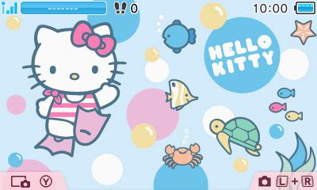
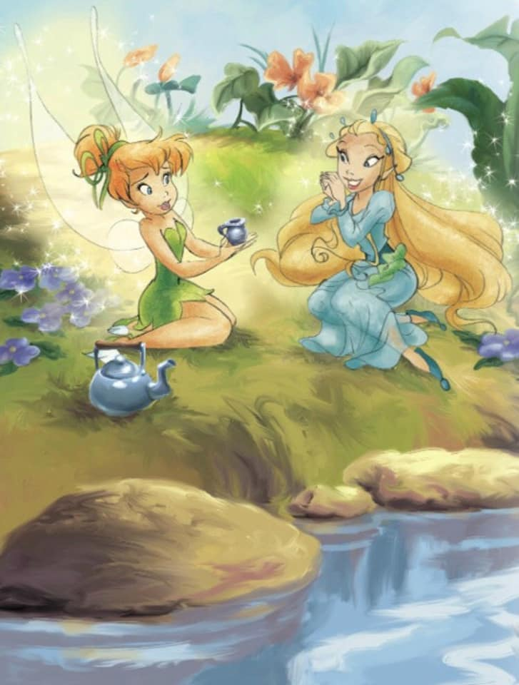
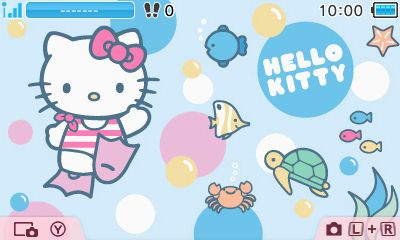
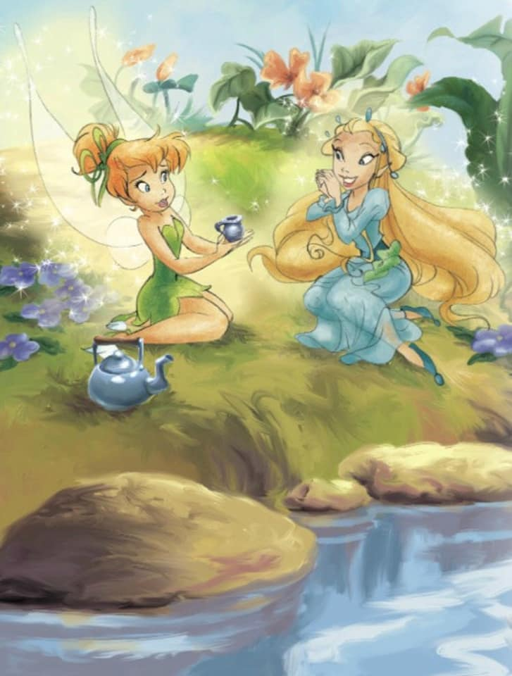

Hello World!
This is my first test website. Check out these cool characters:
 Here on the cutekaomoji website.


Here on the cutekaomoji website.


Shown characters...
- Sabrina the Teenage Witch (the animated series)
- Hello Kitty
- Tinkerbell and Rani
Fun facts about the shown characters...
- Sabrina's cat is actually a human in a black cat's body. That's how he can talk.
- Hello Kitty's favorite food is apple pie. Yum!
- Tinkerbell's cheeks glow red when she's upset. Her friend Rani, was the first fairy to lose their wings (from an injury)